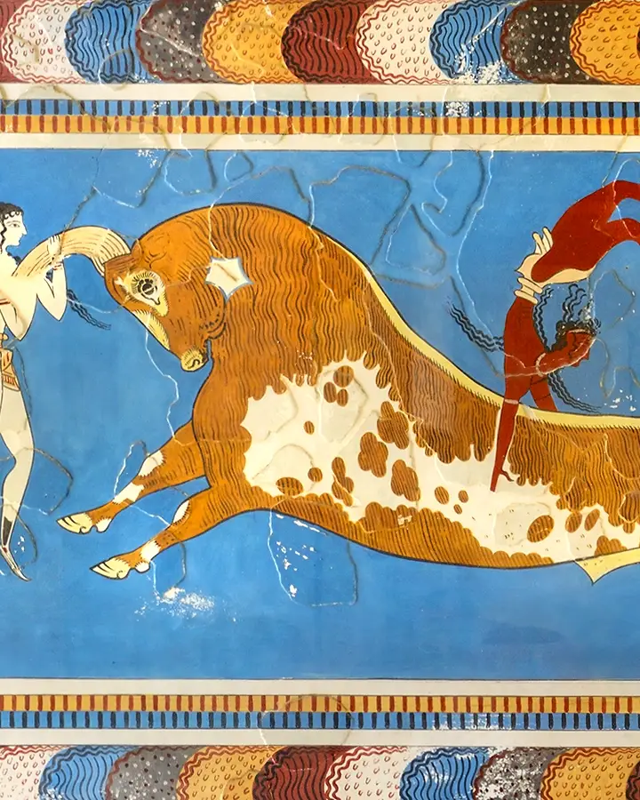
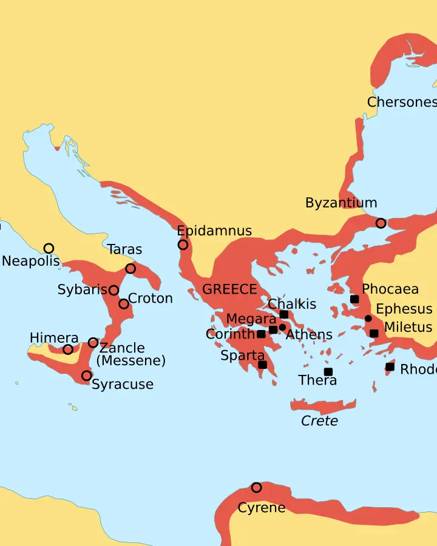
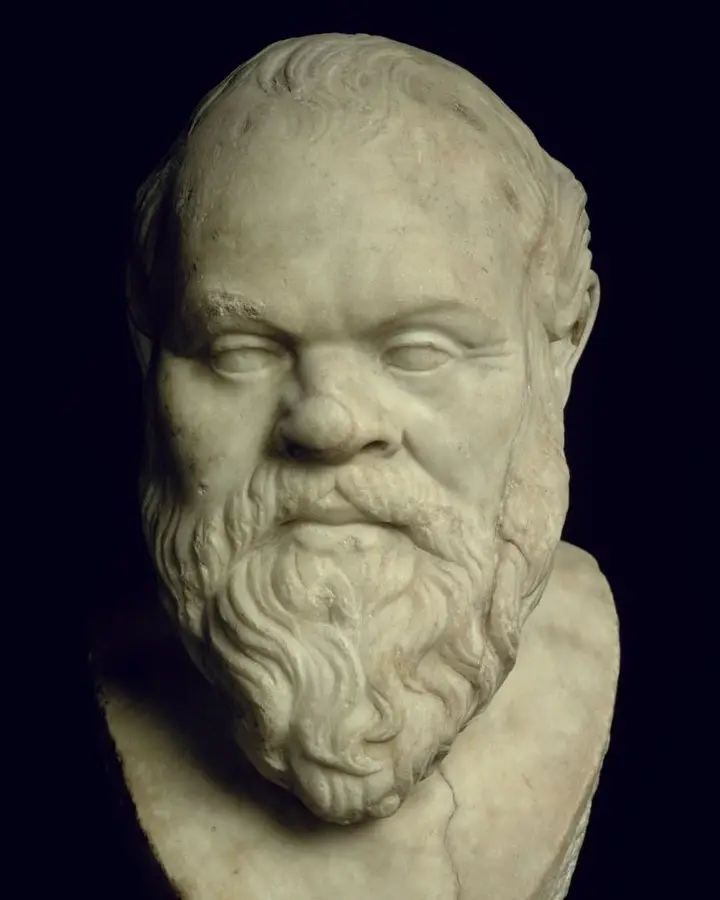
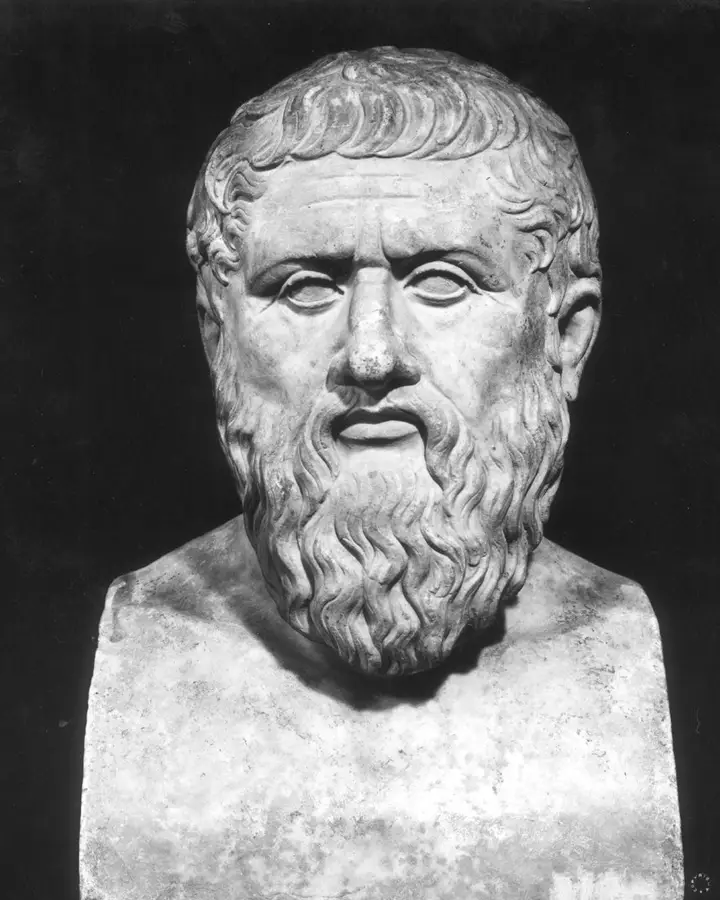
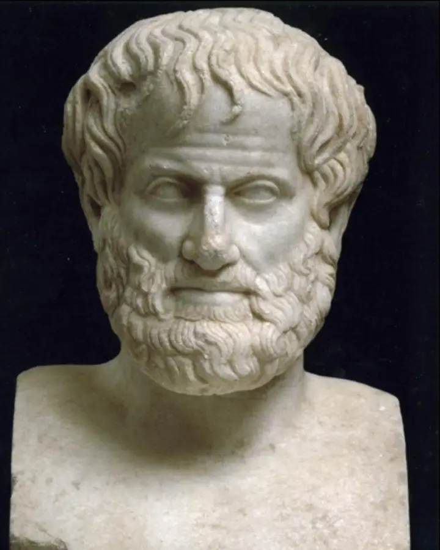
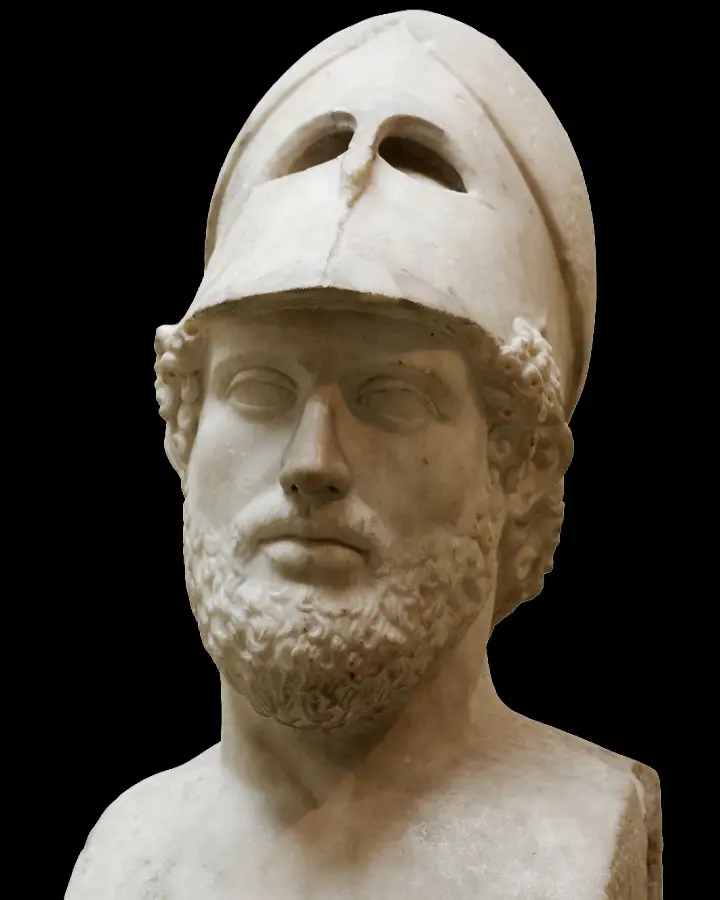
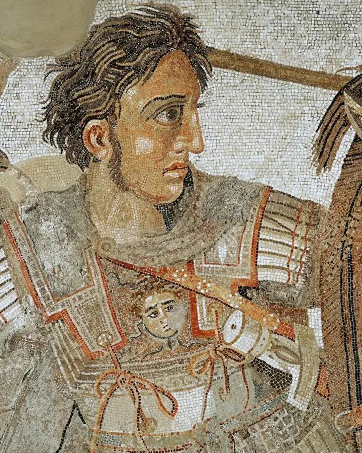
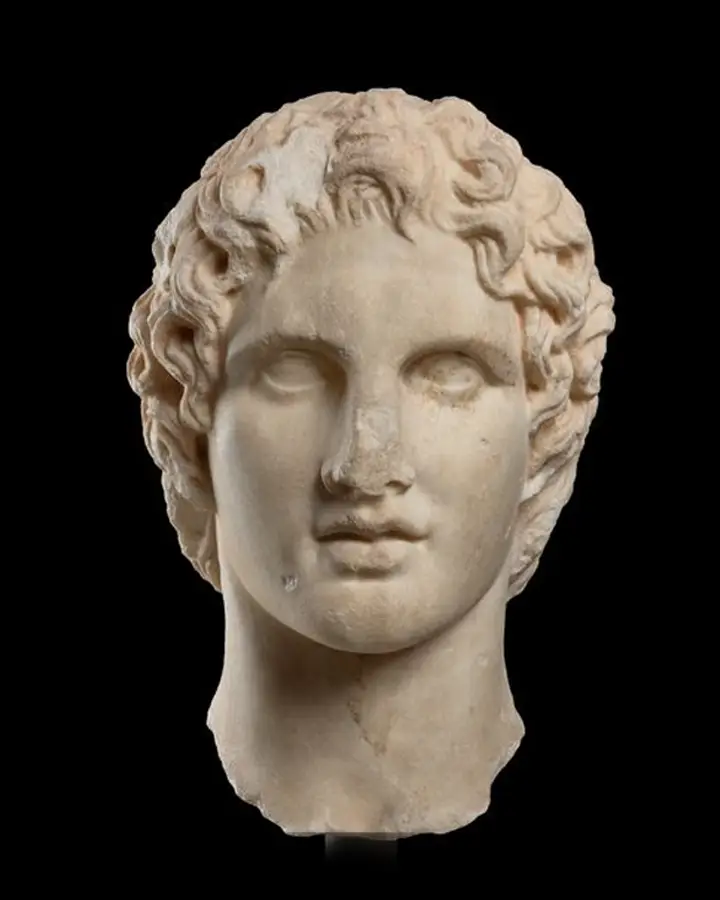

"Mykenerna var Greklands första storkultur. Varför vet vi mer om hur de lagrade spannmål än om vad de trodde på?"
Klicka eller tryck → för att fortsätta
"Ta upp det rätta priset i skeppen med oxhudarna, som kungen gav oss som förläning."
Administrativ tabletttext i Linear B, Pylos (ca 1200 f.Kr.). Ett av de sista dokumenten från den mykenska världen.
Vad berättar det om en civilisation att vi bara känner till den via lagerlistor?
"Hur kan en civilisation förlora förmågan att läsa och skriva på en enda generation?"
Klicka eller tryck → för att fortsätta
"Berätta om mannen, gudinna, den listige som flackade vida sedan han hade förstört Trojas heliga stad..."
Homeros, Odysséen (inledningsraderna), nedtecknad ca 750 f.Kr. Berättar om händelser 500 år tidigare.
Hur förändras en historia när den berättas muntligt i 500 år innan den skrivs ner?

"Varför grundade greker städer i hela Medelhavet i stället för att reformera jordägandet hemma?"
Klicka eller tryck → för att fortsätta
A var från början ett oxhuvud, vänt upp och ned. Varje bokstav var ursprungligen en bild.
"Jag gav folket den makt som tillkommer det, inte mer och inte mindre."
Solon av Aten, fragment 5 (parafraserat), lagstiftare och poet, ca 594 f.Kr.
Är det möjligt att reformera ett orättvist system inifrån, utan revolution?
"Slavarna byggde Parthenon. Varför räknas det ändå som demokratins guldålder?"
Klicka eller tryck → för att fortsätta




"Vår styrelseform kallas demokrati, ty makten är icke i händerna på ett fåtal utan på de många. Var och en av oss kan tjäna samhället. Vi ser inte på klass, utan på förmåga."
Thukydides, Det peloponnesiska kriget II:37, Perikles' liktal, 430 f.Kr. (parafraserat)
Vilka grupper räknades inte som en del av "de många"?

"Alexander lärde sig persiska och gifte sig med en persisk prinsessa. Var det strategi eller kärlek?"
Klicka eller tryck → för att fortsätta

"Alexander ville inte bara erövra länder. Han ville samla världens folk under gemensamma lagar och ett gemensamt liv."
Plutarchos, Om Alexanders lycka och dygd (parafraserat), skriven ca 100 e.Kr.
Vad händer med de kulturer som smälter samman med en annan?
"Är vår demokrati fortfarande grekisk?"
Klicka eller tryck → för att fortsätta
"Människan är av naturen ett politiskt djur. Den som kan leva utanför samhällets gemenskap är antingen ett odjur eller en gud."
Aristoteles, Politiken 1253a (parafraserat), skriven ca 350 f.Kr.
Aristoteles kallade den som lever utanför gemenskapen för ett odjur eller en gud. Vem passar in på det idag?